유통관리사-3급 (2017-11-12 기출문제)
1과목: 유통상식
1. 유통에 대한 설명으로 옳지 않은 것은?
- 유통은 유통대상이 생산자로부터 최종 소비자에게 전달되는 과정이다.
- 유통은 생산과 소비 활동에 직접적인 영향을 준다.
- 유통은 분업이 발달하면서부터 그 적용 범위가 더욱 넓어졌다.
- 유통은 상품의 효용가치를 높이기 위한 방법이므로 서비스는 유통의 대상에 해당되지 않는다.
- 유통은 생산자와 소비자 사이에 존재하는 불일치를 해소하는데 목적을 두고 있다.
(정답률: 84%)

2. 도매상에 대한 설명으로 옳지 않은 것은?
- 도매상의 역할 중에는 판매대행기능이 있다.
- 도매상은 최종판매상이므로 입지, 점포분위기 등에 관련된 마케팅 활동에 심혈을 기울여야 한다.
- 국내에서는 생산자와 소매상의 직접 거래가 크게 증가하면서 도매상의 입지가 점점 좁아지고 있다.
- 도매상은 유통경로 상에서 주로 생산자와 소매상 간의 유통 흐름을 원활하게 해주는 역할을 한다.
- 도매상은 소매상에게 제품이나 서비스를 판매하고 이와 관련된 활동을 수행하는 상인이다.
(정답률: 80%)
3. 소매상 발전에 관한 이론 중 '진공지대이론'에 해당하는 것으로 가장 옳은 것은?
- 백화점-할인점-할인형 백화점 형태로 진화해 간다.
- 소매업 환경 변화에 효율적으로 적응하는 소매상만이 시장에서 살아남는다.
- 기존의 소매업태가 다른 유형의 소매업태로 변화하면 그 빈자리를 새로운 형태의 소매업태가 자리를 채운다.
- 종합상품계열을 가진 유통기관은 한정된 상품계열을 가지는 기관으로 대체되고 이는 다시 종합상품계열을 가진 기관에 대체되는 과정이 되풀이 되면서 변화해간다.
- 도입기에는 저가격ㆍ저서비스, 성장기에는 고가격ㆍ차별적 서비스, 쇠퇴기에는 저가격ㆍ저서비스의 변화과정을 거친다.
(정답률: 50%)
4. 상인 도매상에 대한 설명으로 옳은 것은?
- 거래하는 제품의 소유권을 가지지 않는 독립적인 기업이다.
- 크게 완전기능도매상과 한정기능도매상으로 나누어진다.
- 고객을 대리하여 활동하는 동안 판매와 구매의 협상기능을 수행한다.
- 일반적으로 판매 또는 구매를 통한 수수료를 받는다.
- 제조업자가 재고를 보관하는 창고시설을 갖추고 자신의 상품을 유통하는 도매상이다.
(정답률: 62%)
5. 다음 글상자의 가구기업 유통집약도(distribution intensity) 대안 결정에 관한 사례를 읽고, ( ㉠ ), ( ㉡ ), ( ㉢ )안에 들어갈 용어를 올바르게 나열한 것은?
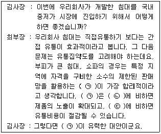
- ㉠ 전속적 유통, ㉡ 개방적 유통, ㉢ 선택적 유통
- ㉠ 개방적 유통, ㉡ 전속적 유통, ㉢ 선택적 유통
- ㉠ 선택적 유통, ㉡ 전속적 유통, ㉢ 개방적 유통
- ㉠ 집약적 유통, ㉡ 전속적 유통, ㉢ 복수 유통
- ㉠ 복수 유통, ㉡ 선택적 유통, ㉢ 전속적 유통
(정답률: 52%)
6. 방문판매 등에 관한 법률에 의거, 방문판매자가 재화 등의 판매에 관한 계약을 체결하기 전에 소비자가 계약의 내용을 이해할 수 있도록 설명해야 하는 사항에 포함되지 않는 것은?
- 방문판매업자 등의 성명, 상호, 주소, 전화번호 및 전자우편주소
- 재화 등의 가격과 그 지급의 방법 및 시기
- 전자매체로 공급할 수 있는 재화 등의 설치 및 전송 등과 관련하여 요구되는 기술적 사항
- 재화 등의 원산지 정보 및 안전전달을 위한 포장방법
- 재화 등을 공급하는 방법 및 시기
(정답률: 25%)
7. 다음 글상자의 내용에 해당하는 도매상은?
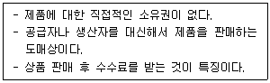
- 생산자 도매상
- 대리 도매상
- 상인 도매상
- 직송 도매상
- 완전 서비스 도매상
(정답률: 85%)
8. 계약형 수직적 유통경로에 속하는 프랜차이즈 시스템(Franchise System)에 대한 설명으로 옳은 것은?
- 가맹점은 본사의 제품개발을 도와야 한다.
- 한번 계약을 맺으면 영속적으로 상호를 사용할 수 있다.
- 본사와 가맹점간의 갈등조정이 비교적 쉽고 빠르다.
- 중앙의 통제력이 낮은 형태이다.
- 프랜차이저(Franchisor)는 가맹본부를 부르는 명칭이다.
(정답률: 64%)
9. 다음 글상자의 내용에 해당하는 소매업태는?
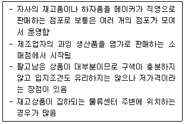
- 수퍼센터
- 복합쇼핑몰
- 파워센터
- 하이퍼마켓
- 아울렛
(정답률: 73%)
10. ( ㉠ ), ( ㉡ ) 안에 들어갈 용어로 옳은 것은?
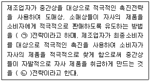
- ㉠ 광고, ㉡ 판촉
- ㉠ 푸쉬(push), ㉡ 풀(pull)
- ㉠ 풀(pull), ㉡ 푸쉬(push)
- ㉠ 수비, ㉡ 공격
- ㉠ 판촉, ㉡ 광고
(정답률: 66%)
11. 간접유통이면서 동시에 점포유통인 유형으로만 올바르게 나열한 것은?
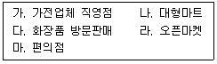
- 가, 나, 다
- 가, 나, 마
- 나, 마
- 다, 라
- 다, 마
(정답률: 56%)
12. 업종과 업태에 대한 설명으로 옳지 않은 것은?
- 업종이란 상품군에 따른 전통적 분류이다.
- 업태란 '어떤 방법으로 판매하고 있는가?'에 따른 분류이다.
- 업종이란 소매기업이 취급하는 주력상품의 총칭이다.
- 백화점, 편의점, 할인점, 카테고리 킬러 등은 업태의 분류이다.
- 업종이란 가격대와 집하형식으로 소매업을 분류하는 것이다.
(정답률: 41%)
13. 우리 나라 소매상의 추세에 대한 설명으로 가장 옳지 않은 것은?
- 소매업의 양극화 추세가 심화되고 있다.
- 대형마트 출현 이후 저마진-고회전을 추구하는 소매업태가 성장해왔다.
- 대형 소매상(power retailer)에 의한 시장지배력이 심화되고 있다.
- 규모의 경제를 추구하는 대형 점포가 증가하고 있다.
- 무점포에 비해 점포소매상이 성장함에 따라, 판매사원에 대한 의존도가 증가하고 있다.
(정답률: 66%)
14. 직장내 성희롱 예방요령으로 옳지 않은 것은?
- 부하직원을 칭찬할 때 쓰다듬거나 하는 행위를 하지 않는다.
- 가급적 신체접촉을 안 한다.
- 당사자 간의 일이므로 관리자가 나설 필요는 없다.
- 일단 성희롱이 발생하면 즉시 조치를 취한다.
- 조치 이후에 가해자가 보복하지 않도록 주의해야 한다.
(정답률: 88%)
15. 우리 나라 케이블 TV홈쇼핑에 대한 설명으로 가장 옳지 않은 것은?
- 케이블 TV홈쇼핑은 제품판매와 동시에 시장조사가 가능하므로 신제품의 경우 마케팅 리서치 기능을 한다.
- 케이블 TV홈쇼핑은 채널 및 프로그램의 다양성을 통해서 시장의 세분화가 가능하다.
- 케이블 TV홈쇼핑은 통신판매의 문제점인 다양한 정보와 현장감 부족을 극복할 수 있다.
- 케이블 TV홈쇼핑은 제품을 입체적으로 제시하며 설명을 충분히 할 수 있어서, 소비자에 대한 침투력이 강하다.
- 케이블 TV홈쇼핑은 우수 중소기업 제품의 판매비중이 높으나, 자체 브랜드의 개발과 판매는 소홀하다.
(정답률: 77%)
16. 화주기업의 고객서비스 향상, 물류비 절감, 물류활동의 효율성 향상 등의 목표를 달성할 수 있도록 외부의 전문물류사업자가 공급체인상의 물류기능 전체 혹은 일부를 대행, 처리하는 물류서비스를 지칭하는 용어는?
- 제1자물류
- 제2자물류
- 제3자물류
- 제4자물류
- 제5자물류
(정답률: 71%)
17. 판매원이 알아야 할 일반 고객의 구매과정 순서로 옳은 것은?
- 대안평가 → 문제인식 → 정보탐색 → 구매
- 정보탐색 → 문제인식 → 대안평가 → 구매
- 문제인식 → 대안평가 → 정보탐색 → 구매
- 문제인식 → 정보탐색 → 대안평가 → 구매
- 대안평가 → 정보탐색 → 문제인식 → 구매
(정답률: 64%)
18. 가격파괴형 유통 업태에 해당하지 않는 것은?
- 할인점
- 카테고리 킬러
- 회원제 도매클럽(MWC)
- 아울렛
- 수퍼마켓
(정답률: 50%)
19. 유통산업발전법 상 준대규모점포에 해당하는 점포가 아닌 것은?
- 대규모점포를 경영하는 회사가 직영하는 점포로써 대통령령으로 정한 준대규모 점포
- 대규모점포를 경영하는 회사의 계열사가 직영하는 점포로써 시장, 군수, 구청장이 인정하는 곳
- 대규모점포를 경영하는 회사가 직영점형 체인사업의 형태로 운영하는 점포
- 대규모점포를 경영하는 회사의 계열사가 프랜차이즈형 체인사업의 형태로 운영하는 점포
- 「독점규제 및 공정거래에 관한 법률」에 따른 상호 출자제한 기업집단의 계열회사가 직영하는 점포
(정답률: 47%)
20. 상적 및 물적 성격에 따라 유통을 분류할 때, 물적유통에 해당하는 것은?
- 하역업
- 대리업
- 도매업
- 무역업
- 소매업
(정답률: 60%)
2과목: 판매 및 고객관리
21. A와 B의 대화에서 ㉠~㉤ 중 옳지 않은 것은?
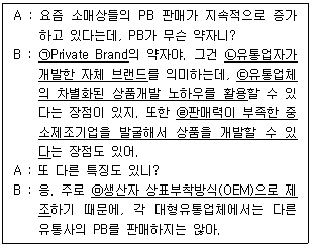
- ㉠
- ㉡
- ㉢
- ㉣
- ㉤
(정답률: 61%)
22. 판매공간의 효율적 사용과 일상적이면서도 계획된 구매행동을 촉진하기 위한 점포 배치로 동일 제품에 대한 반복구매가 높은 소매점에 적당한 점포배치는?
- 특선품구역
- 격자형배치
- 자유형배치
- 경주로형배치
- 진열걸이배치
(정답률: 67%)
23. 서비스에 대한 고객의 기대에 영향을 미치는 요인에 대한 내용으로 옳지 않은 것은?
- 서비스 직원의 말씨, 태도, 상품지식, 상품설명능력 등이 고객의 서비스 기대수준을 변화시킬 수 있다.
- 고객의 경험이 풍부할수록 고객의 기대가 올라가는 경향이 있다.
- 구전으로부터 얻어진 정보는 고객의 예측된 기대를 형성하거나 강화한다.
- 높은 가격은 고객의 서비스 기대수준을 높이고 허용영역을 넓히는 역할을 한다.
- 소비자의 기분상태가 기대에 영향을 미칠 수 있는데, 소비자의 기분이 좋을 때에는 허용영역이 넓어지고 적정서비스 기대수준이 낮아진다.
(정답률: 35%)
24. 소비자 행동 이론에 의하면, 소비자의 의사결정 형태와 관여도를 기준으로 소비자 행동을 4가지로 나눌 수 있다. 빗금친 부분에 해당하는 내용으로 가장 옳은 것은?
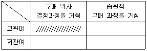
- 제품 간 차이가 적어 과거 경험에 비추어 만족했던 상품을 다시 재구매 한다.
- 제품 간 뚜렷한 차이점이 있어 제품에 대한 정보를 많이 알아야 한다.
- 상표 전환이 쉽게 일어나며 중요도나 관심도가 떨어진 상태에서 구매한다.
- 신제품이 출시되었을 경우 적극적인 정보탐색보다는 단순히 새로움에 구매한다.
- 상표에 대한 확신보다는 시험구매나 가격할인 등에 의해 구매한다.
(정답률: 83%)
25. 서비스 품질을 평가하는 SERVQUAL 모형에서 신뢰성에 해당하는 부분으로 옳은 것은?
- 고객의 개인적 요구에 대한 감정적인 이해와 배려
- 건물, 인테리어, 비품 등의 물리적인 시설
- 약속한 서비스 수행의 철저함이나 청구서의 정확도
- 고객의 문의나 요구에 대하여 즉시 응답
- 서비스 종업원들의 지식과 기술
(정답률: 60%)
26. 상품 진열의 기본 원칙으로 옳지 않은 것은?
- 고객이 구매하기 쉽도록 진열해야 한다.
- 고객이 상품을 보기 쉽고 찾기 쉽게 진열해야 한다.
- 고객의 동선에 맞춰 상품을 진열해야 한다.
- 상품의 가짓수를 고려하여 균형 있게 진열해야 한다.
- 구매비율이 높은 상품은 한쪽으로 몰아서 진열해야 한다.
(정답률: 82%)
27. 다음 글상자의 내용에 해당하는 소비재 상품은?
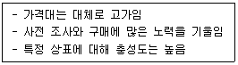
- 편의품
- 선매품
- 전문품
- 설비품
- 소모품
(정답률: 75%)
28. 불만 고객 응대의 6단계를 가장 올바른 순서대로 나열한 것은?
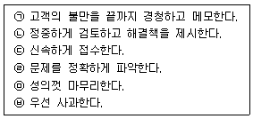
- ㉢→㉥→㉠→㉣→㉡→㉤
- ㉢→㉥→㉠→㉡→㉣→㉤
- ㉢→㉥→㉤→㉠→㉣→㉡
- ㉥→㉣→㉡→㉢→㉠→㉤
- ㉥→㉢→㉡→㉤→㉣→㉠
(정답률: 72%)
29. 고객관계관리(Customer Relationship Management: CRM) 에 대한 설명으로 가장 옳지 않은 것은?
- CRM은 다수의 고객을 대상으로 다수 대 다수 마케팅방식을 일반적으로 사용하여 지속적인 구매를 유도한다.
- CRM은 고객 평생 가치(Life Time Value)를 극대화하여 수익성을 높일 수 있는 통합된 프로세스이다.
- 고객이 원하는 제품과 서비스를 지속적으로 제공함으로서 고객을 오래 유지시키는 것이 CRM의 주된 목적이다.
- CRM은 고객의 수익기여도에 따라 차별화된 전략을 실행한다.
- CRM은 교차판매, 상향판매 등을 통해 수익성을 증대할 수 있다.
(정답률: 52%)
30. 촉진의 수단 중 광고(Advertising)의 특징에 대한 설명으로 옳지 않은 것은?
- 광고료를 지불해야하는 유료성을 가진다.
- 비인적 촉진 활동으로 대중매체를 통해 정보를 제시하는 것이 일반적이다.
- 상품만이 아닌 기업의 이미지, 이념 등의 아이디어를 함께 제공할 수 있다.
- 상품에 관계없이 메시지 전달수단을 최대로 확보하여 고객에게 최대한 많이 노출시키는 것이 효과적이다.
- 고객의 관심을 끌고 기억에 남는 전달 메시지를 만들어야 한다.
(정답률: 62%)
31. 판매시점 정보관리(POS : Point of Sales)시스템의 효과로 옳지 않은 것은?
- 전자 주문 시스템과 연계되므로 소매상은 신속하고 적절한 구매가 가능해진다.
- 소매상은 재고의 적정화, 판촉전략의 과학화 등을 가져올 수 있다.
- 계산원의 부정을 방지할 수 있다.
- 입력오류가 빈번히 발생하기 때문에 판매원의 교육시간이 다소 길어지지만 교육을 통하여 오류의 빈도수를 줄일 수 있다.
- 고객 대기 시간과 계산대의 수를 줄일 수 있으므로 시간과 비용을 절감할 수 있다.
(정답률: 64%)
32. 고객의 컴플레인을 처리하는 방법 중에 MTP기법이 있다. 이에 대한 설명으로 옳은 것은?
- 컴플레인은 반드시 접수 받은 사람이 해결해야 한다.
- M(Method) - 불만고객을 대응하는 방법의 전환을 의미한다.
- T(Time) - 고객이 흥분했을 때는 즉각적 해결안 제시보다 흥분을 가라앉힐 시간이 필요하다.
- P(People) – 판매원보다 관리자가 나서서 직접 처리하는 것이 더 효과적이다.
- 불만 고객은 많은 사람들이 지켜볼 수 있는 공적공간에서 서서 대응하는 것이 효과적이다.
(정답률: 62%)
33. 판촉수단에 대한 설명으로 옳지 않은 것은?
- 샘플링 : 구입이 예상되는 고객에게 특정 제품을 무료로 제공함으로써 상품을 접촉하게 하여 최초 구매를 유도 하거나 상표전환을 유도
- 쿠폰 : 특정 제품을 구입할 때 할인혜택이나 기타 특별한 가치를 주고 받을 수 있는 가치증서
- 리베이트 : 제품구매에 따라 일정금액을 되돌려 주는 방법
- 경품 : 고객이 자신의 이름, 연락처 등 몇 가지 사항을 기재해서 담당자에게 전달한 후, 추첨형식으로 진행
- 즉석 당첨 프리미엄 : 정가에서 할인된 가격을 표찰이나 포장에 표시하여 판매하는 것으로 소비자들에게 즉각적인 현금보상과 절약 제공
(정답률: 72%)
34. 상품을 알고 나서 구입을 결정하기까지 소비자의 심리적인 과정(AIDMA모형)을 기술한 것이다. 이 과정에 대한 법칙의 내용과 용어를 짝지은 것으로 옳지 않은 것은?
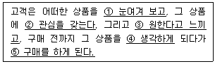
- 주의(Attention)
- 관심(Interest)
- 욕망(Desire)
- 의미(Meaning)
- 행동(Action)
(정답률: 80%)
35. 서비스 유통 경로의 특성으로 옳지 않은 것은?
- 소비자가 제공받을 서비스 질에 대한 불확실성을 느끼지 않게 유형적인 단서를 제공하는 것이 좋다.
- 물리적으로 보관하거나 운송할 수 없다.
- 서비스는 직접 마케팅 경로가 일반적이나, 프랜차이즈 등을 활용하여 간접 유통할 수 있다.
- 서비스는 형체가 없고 생산과 소비가 분리될 수 있다.
- 생산되는 장소와 판매되는 장소가 일치한다.
(정답률: 51%)
36. 점포설계시 고려할 점으로 가장 옳지 않은 것은?
- 표적시장의 욕구를 충족시키고 경쟁우위를 획득한다.
- 상품 구색이 바뀔 경우를 대비해 유연성을 높인다.
- 전문점의 경우 경비 절감을 위해 비용최소화를 최우선 목적으로 한다.
- 고객의 구매 행동을 촉진하기 위해 노력한다.
- 법적 규제사항을 고려하여 합법적으로 설계한다.
(정답률: 76%)
37. 다음과 같은 상황에서 판매원이 취해야 할 언행으로 가장 바람직한 것은?
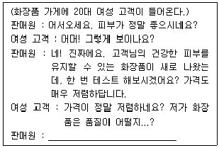
- 품질은 약간 떨어지지만 필요한 성분들만 넣었기 때문에 괜찮은 제품이랍니다.
- 비싼 화장품보다는 품질이 낮지만 그래도 괜찮은 편입니다.
- 이 제품은 50대 이상 고객님들이 현재 피부를 유지하기 위한 제품이기 때문입니다.
- 시중에 나와 있는 비싼 화장품들은 용기만 더 좋을 뿐이지 품질은 다 똑같답니다.
- 저가로 팔 수 있는 이유는 품질은 그대로 유지한 채 포장비용과 유통마진을 최소화 시켰기 때문입니다.
(정답률: 79%)
38. 고객과의 전화 응대 중 유의사항으로 가장 옳은 것은?
- 대화 종료 후 고객보다 먼저 끊는다.
- 고객과의 대화 중 메모를 하기 보다는 기억력에 의존하여 응대한다.
- 본인의 사적인 통화 중 고객이 방문하여도 계속 통화한다.
- 수화기를 어깨와 턱에 걸치고 통화한다.
- '뭐라고요?', '네?' 등의 표현은 삼가고 정확하게 발음한다.
(정답률: 84%)
39. 점포시설 구성과 관련된 점내시설 중의 하나인 통로 설계 시 고려 사항으로 옳지 않은 것은?
- 고객의 동선(動線)은 가능한 한 입구에서 점내 깊숙한 곳까지 길게 하는 것이 좋다.
- 종업원의 동선은 매장의 모든 고객을 응대할 수 있도록 가능한 길게 하는 것이 좋다.
- 고객이 걸어 다니기에 편한 폭과 바닥 소재, 상품진열과의 관련 그리고 조명과의 관련성을 고려해야 한다.
- 점포의 규모가 클 경우에는 고객이 쉴 수 있는 의자를 설치할 수 있는 공간도 필요하다.
- 점포 내의 통로는 점두 부분과 점내 전체를 연결하기 위한 중요한 시설로서 고객으로 하여금 점포 내를 두루 다닐 수 있도록 고려하여 설계하여야 한다.
(정답률: 78%)
40. 판매 포인트(selling point)에 대한 설명으로 옳지 않은 것은?
- 판매 포인트는 상품의 특성이 고객의 구매동기와 일치하여 기대하는 욕구를 충족시킬 수 있다는 사실을 판매화법으로 제시해놓은 상품 설명 문구이다.
- 판매 포인트가 제품설명문의 역할을 하여 잠재고객의 이해를 도울 수 있도록 가능한 다양한 포인트를 충분히 길게 설명해 놓은 문구여야 한다.
- 상품의 특징이나 장점, 기능 등에 대해 말한다.
- 경쟁상품이 가지고 있는 단점을 말하긴 하나 비난해서는 안 된다.
- 경쟁상품의 회사이름과 상품이름은 실제이름을 사용하지 말고 암시적인 이름이나 대명사를 사용한다.
(정답률: 48%)
41. 올림픽시즌을 맞이하여 판매를 촉진하고 쇼핑을 더욱 즐겁게 만드는데 가장 잘 활용될 수 있는 진열방식은?
- 구색진열
- 테마별진열
- 패키지진열
- 컷케이스진열
- 통진열
(정답률: 60%)
42. 브랜드(brand) 및 브랜드 범주들(brand categories)과 관련된 설명으로 옳지 않은 것은?
- 무상표 상품(generic goods) : 생산자나 판매자 브랜드에 비해 상당히 할인되어 판매되는 상표가 없는 제품
- 짝퉁 브랜드(knock-off brand) : 생산자 브랜드명 상품에 대한 불법 복제품
- 브랜드 자산(brand equity) : 제품이나 서비스가 브랜드를 가졌기 때문에 누리는 마케팅효과로, 인식, 충성도, 지각된 품질, 이미지와 감정의 조합
- 브랜드 충성도(brand loyalty) : 소비자의 브랜드 선호도와 추가구매를 하려는 정도
- 브랜드 인식(brand awareness) : 생산자의 이름을 쓰지 않는 대신 유통업자나 소매상의 이름을 쓰는 제품
(정답률: 79%)
43. 마케팅 믹스(4P)에 해당하지 않는 것은?
- 포지셔닝(Positioning)
- 제품(Product)
- 가격(Price)
- 유통(Place)
- 촉진(Promotion)
(정답률: 77%)
44. 브랜드(Brand)의 기능으로 가장 옳지 않은 것은?
- 상품 선택 촉진
- 출처와 책임을 명확히 하는 무형의 자산
- 상품을 보증해 주는 기능
- 브랜드 선호도에 따른 고유 시장 확보
- 기업의 단기적인 이익향상에 가장 크게 기여하는 중요한 요소
(정답률: 89%)
45. 앨빈 토플러(Alvin Toffler)가 '제3의 물결'에서 처음 사용한 용어로 생산 활동에 직접 참여하는 소비자를 뜻하는 것은?
- 큐레이슈머(curasumer)
- 트랜슈머(transumer)
- 프로슈머(prosumer)
- 온라인 마케터(online marketer)
- 파워 블로거(power blogger)
(정답률: 47%)